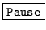

Use
HSLAB is invoked by typing the command line
HSLab [options] dataFile
where dataFile is a data file in any of the supported formats with a
WAVEFORM sample kind. If the given data file does not exist, then
HSLAB will assume that a new file is to be recorded with this name.
The available options for HSLAB are
- -a
- With this switch present, the numeric part of the global labelling
string is automatically incremented after every Label operation.
- -i file
- This option allows transcription files to be output to the
named master label file (MLF).
- -n
- Normally HSLAB expects to load an existing label file
whose name is derived from the speech data file. This option tells
HSLAB that a new empty transcription is to be created for the loaded
data-file.
- -s string
- This option allows the user to set the string displayed
in the ``command'' button used to trigger external commands.
- -F fmt
- Set the source data format to fmt.
- -G fmt
- Set the label file format to fmt.
- -I mlf
- This loads the master label file mlf. This option
may be repeated to load several MLFs.
- -L dir
- Search directory dir for label files (default
is to search current directory).
- -X ext
- Set label file extension to ext
(default is lab).
HSLAB also supports the standard options -A,
-C, -D, -S, -T, and -V as described
in section 4.4.
The following is a summary of the function of each HSLAB
button.
-

- Load a speech data file and associated transcription.
If changes have been made to the currently loaded transcription
since it was last saved the user will be prompted to save these
changes before loading the new file.
-

- Save changes made to the transcription into a specified
label file.
-
- Print information about HSLab.
-

- Exit from HSLAB. If alterations have been made
to the currently loaded transcription since it was last saved, the user
will be prompted to save these changes before exiting.
-
- This button is used to trigger an external command which
can process the waveform file currently loaded in HSLAB. This
is accomplished by setting the environment variable HSLABCMD to the
shell command required to perform the processing. When the Command
button is pressed, any occurrence of $ in the shell command is
replaced by the name of the currently loaded waveform file. Note that
only the filename without its extension is substituted. The string
displayed in the ``command'' button can be changed using the -s
option.
-
- Mark a region of the displayed waveform. The user
is prompted to specify the start and the end point of a region with
the mouse pointer. The marked region will be displayed in inverse
colours. Only one region can be marked at a time.
-

- Unmark a previously marked region.
-
- Scroll the display to the left.
-
- Scroll the display to the right.
-
- Zoom into a part of the displayed waveform. If there is
a currently marked region then that region will be zoomed into,
otherwise, the user will be prompted to select a slice of the
waveform by specifying two points using the mouse pointer.
-
- Restore the previous viewing level.
-
- Display the complete waveform into the window. Any
marked regions will be unmarked.
-
- If there is a marked region of the waveform then
that portion of the signal will be played through the internal speaker.
Otherwise, the command will apply to the waveform visible on the
screen.
-
- This initiates recording from the audio input device. The maximum
duration of a recording is limited to 2 mins at 16KHz sampling rate. Two bar-graphs
are displayed: the first (red) shows the number of samples recorded, the second
bar (green) displays the energy of the incoming signal. Once pressed, the
Rec button changes into Stop which, in turn, is used to terminate
the operation. When finished, the audio data stored in the buffer is written
out to disk. Each recording is stored in alternating files
dataFile_0 and dataFile_1.
-

- Clicking on this button pauses/un-pauses the recording operation.
-
- This button is used to select the playback volume of the
audio device.
-
- This button selects the current level of waveform magnification.
The available factors are , , , ,
, and .
-
- If a marked region exists, then the waveform contained in the
region will be labelled with The Current Label. Otherwise, the
command will be applied to the waveform visible on the screen.
-
- Same as above, however, the user is prompted to type in
the labelling string.
-
- Delete a label.
-
- Edit the string of a label.
-
- Select a label as a marked region.
-

- Adjust the boundaries of a label. To select the label
boundary to adjust, click in the display near to the label boundary.
-
- This button is used to select the current alternative
transcription displayed and used in HSLAB.
-
- Creates a new alternative transcription. If an empty alternative
transcription already exists, then a new transcription is not created.
-
- Single level undo operation for labelling commands.
-
- Change the current labelling string (the button in the
bottom right of the control area).
The following ``mouse'' shortcuts are provided. To mark a region position the pointer at
one of the desired boundaries, then press the left mouse button and while holding it down
position the pointer at the other region boundary. Upon releasing the mouse button the
marked region will be hilighted. To play a label position the mouse cursor anywhere within
the corresponding label ``slice'' in the label area of the display and click the left
mouse button.
Back to HTK site
See front page for HTK Authors